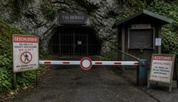

Geschlossene unterirdische Sehenswürdigkeiten

Deutschland hat seit dem späten 19. Jahrhundert Schauhöhlen, und seit dem frühen 20. Jahrhundert Schaubergwerke. Im Laufe der Zeit wurde das eine oder andere auch wieder geschlossen, sei es, weil keine Besucher mehr kamen, weil es zu klein war, weil kein Betreiber mehr da war, oder auch weil der technische Aufwand erheblich gewesen wäre. Manche Höhlen wurden auch aus Umweltschutzgründen geschlossen, zum Beispiel zum Fledermausschutz. Doch in der Regel waren es politische Ereignisse, wie Kriege, die zur Schließung führten und danach fand sich niemand mehr der es noch betreibt.
Betrachtet man jedoch die Art der geschlossenen Orte, stellt man fest, dass viele ehemaligen Schaubergwerke geschlossen wurden. Das liegt unter anderem an den hohen Sicherheitsstandards in Deutschland, die zudem mehrfach verschärft wurden. Bergwerke sind durchaus gefährlich, eine Höhle die bereits Millionen Jahre alt ist stürzt nicht einfach ein, ein Stollen, der den Druck des Berges nur durch seinen Ausbau aushält, stürzt ein wenn der Ausbau (oft aus Holz) verrottet ist. Bei den Schauhöhlen sind es eher die relativ gering ausgebaut halb-wilden, die irgendwann einfach aufgegeben werden. Diese tauchen allerdings nur dann in dieser Liste auf, wenn sie tatsächlich verschlossen wurden. Vielfach kann man sie aber noch auf eigene Faust mit ein bisschen gesundem Menschenverstand sicher besuchen.
Diese Seite hat zwei Listen. Die ertste verlinkt zu den Seiten von Objekten, die wir bereits beschrieben hatten, als sie noch für Touristen geöffnet waren. Wir haben diese Seiten ausdrücklich als geschlossen markiert und wenn bekannt auch erläutert, warum sie geschlossen wurden. Temporäre Schließungen, zum Beispiel für Renovierungsarbeiten, sind nicht dabei. Die zweite Liste gibt nur grobe Eckwerte zum Objekt an, soweit bekannt. Dies sind alle die Objekte, die wir nicht gelistet hatten, die wir aber gelistet hätten.
 Kammerbacher Höhle
Kammerbacher Höhle Drei Kronen & Ehrt
Drei Kronen & Ehrt- Scholmzeche - Aufrichtigkeit
- Kupferschieferbergwerk Lange Wand
- Andreas-Gegentrum-Stolln
 Niedaltdorfer Tropfsteinhöhle
Niedaltdorfer Tropfsteinhöhle- Kristallgänge
- Historisches Schmucksteinbergwerk "Kittenrain"
- Heinrich-Kocher-Stollen
- Reichhartschacht
- Kahlensteinhöhle
 Museum Ulm
Museum Ulm- Vogelherdhöhlen
- Grube Otto
- Bergbaumuseum Sulzburg
| Name | Location | Coordinates | Comment |
|---|---|---|---|
| Thomas-Münzer-Schacht - Thomas-Müntzer-Schacht - Schacht Sangerhausen | Sangerhausen |  OpenStreetMap OpenStreetMap |
Der Abbau wurde nach der Wiedervereinigung eingestellt, das Bergwerk ist abgesoffen, Förderturm wurde abgerissen, Schacht verfüllt. Man kann das ehemalige Magazin, die Werkstatt und den Schachtdeckel von außen besichtigen. Es wird manchmal als Schaubergwerk oder auch als Bergwerksmuseum bezeichnet, tatsächlich sind es nur Gebäude die inzwischen als Industriegebiet nachgenutzt werden. |
| Besucherbergwerk Silberstollen Geising | Geising | OpenStreetMap |
Der Ort Geising im Osterzgebirge hat vielfältige Bergbauspuren. Seit dem Mittelalter wurde Silber und Zinn abgebaut, es gab 15 Pochwerke, 40 Wasserräder und 3 Schmelzhütten. Hier passierte 1620 die größte Bergbaukatastrophe im Osterzgebirge, bei der ein Abbau zusammenstürzte und sich die Altenberger Pinge bildete. Der Bergbau endete mit der Wiedervereinigung, der Silberstollen wurde kurzfristig als Schaubergwerk betrieben, wurde aber wohl 1995 bereits geschlossen. Heute kann lediglich das Mundloch besichtigt werden. |
| Gott gibt Glück mit Freuden | Breitenbrunn - Halbemeile | OpenStreetMap |
Dieser Stollen ist recht aussergewöhnlich, im Gegensatz zu anderen Bergwerken wurde er von einem einzigen Bergmann von Hand gegraben. Karl Friedrich Lobegott Schmidt arbeitete 13 Jahre lang allein mit Schlägel und Eisen in seiner Grube als Eigenlöhner. Dabei trieb er den Stollen 100 m tief in den Berg. Doch trotz des hoffnungsvollen Namens hatte er damit keinen wirtschaftlichen Erfolg, er fand nie Erze in nennenswerter Menge. Der Stollen wurde von der Bergknappschaft Breitenbrunn wieder befahrbar gemacht und einige Jahre als Schaubergwerk betrieben. |
 Auf Duck Duck Go nach "Geschlossene unterirdische Sehenswürdigkeiten" suchen...
Auf Duck Duck Go nach "Geschlossene unterirdische Sehenswürdigkeiten" suchen... Geschlossene unterirdische Sehenswürdigkeiten
Geschlossene unterirdische Sehenswürdigkeiten
 Index
Index Hierarchisch
Hierarchisch Länder
Länder Karten
Karten{kind=link}